PENCAK A Living Archive of Silat
Explore the heritage of Silat Seni Gayong and meet a Virtual Guru in VR.
UI/UX design · Sound design · VFX
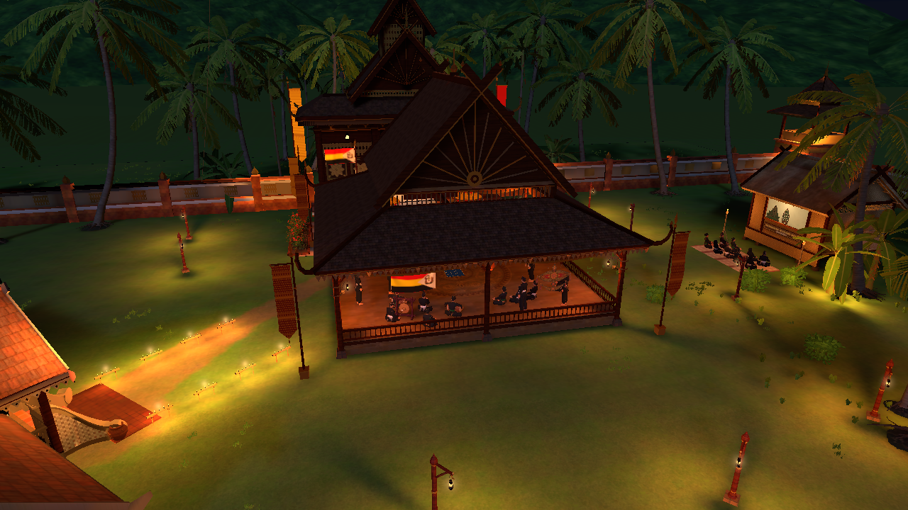
First place at DICE 4.0
IMMERSA Studio represented Universiti Teknikal Malaysia Melaka (UTeM) with PENCAK at Digital Innovation Creativepreneur (DICE) 4.0, an international student programme and competition for market-ready digital and AI-driven innovation.
17–19 November 2026 · Putrajaya International Convention Centre · Festival Idea Putrajaya
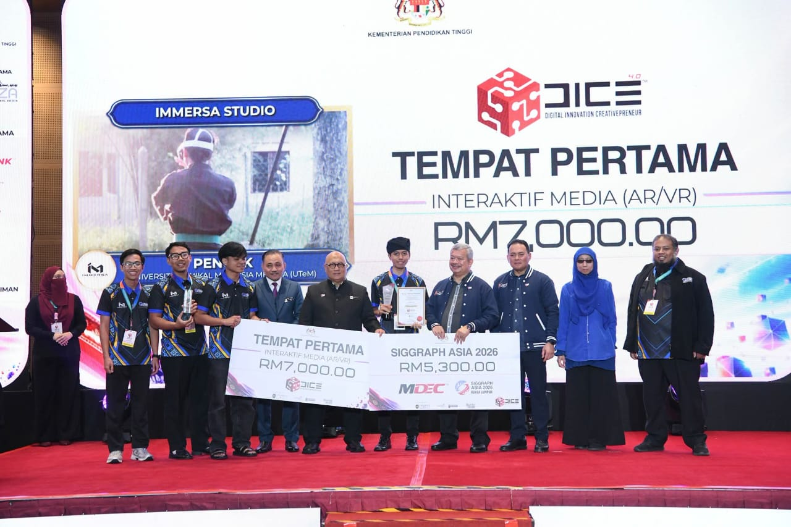
Inside PENCAK
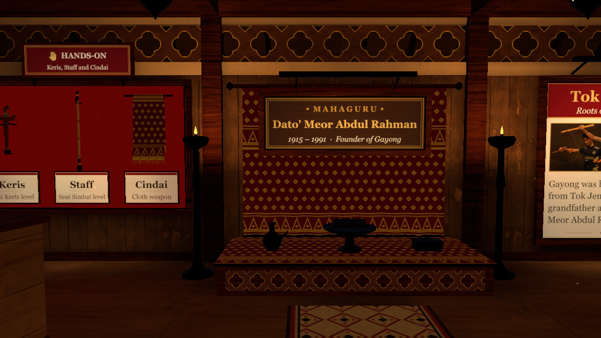
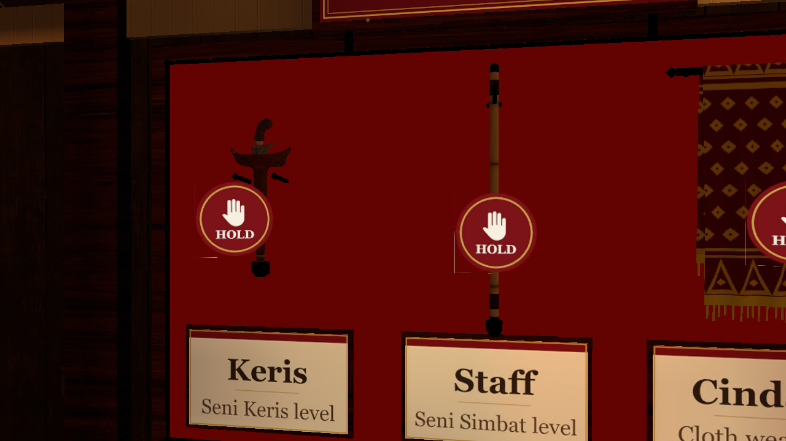
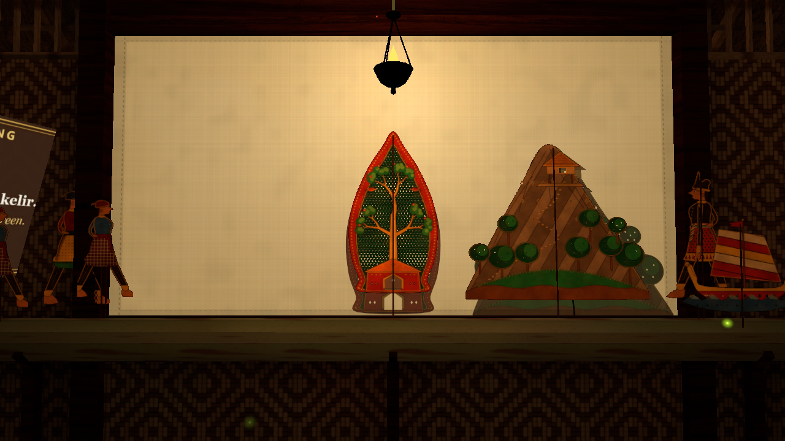
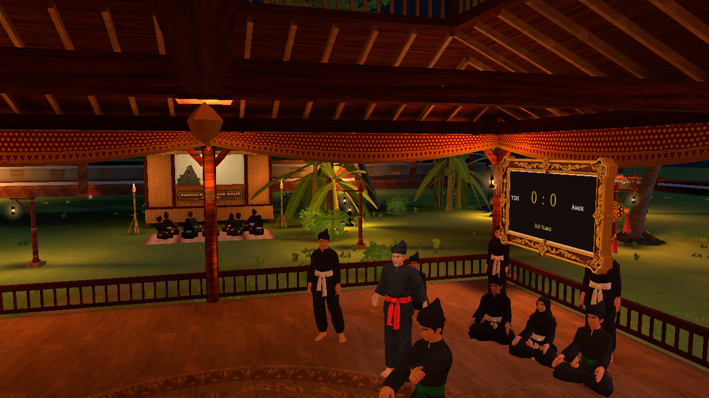
The idea
PENCAK is a virtual reality introduction to Silat Seni Gayong, developed by the IMMERSA team. It invites newcomers to learn through movement: watch a demonstration, try it themselves, and build confidence through practice.
Silat is a living tradition shaped by people, places, and repeated practice. PENCAK uses a virtual setting to make that first encounter more approachable and to encourage interest in the heritage behind the movements.
How the experience unfolds
The pitch deck presents a simple learning journey, from exploring the setting to putting new movements into practice.

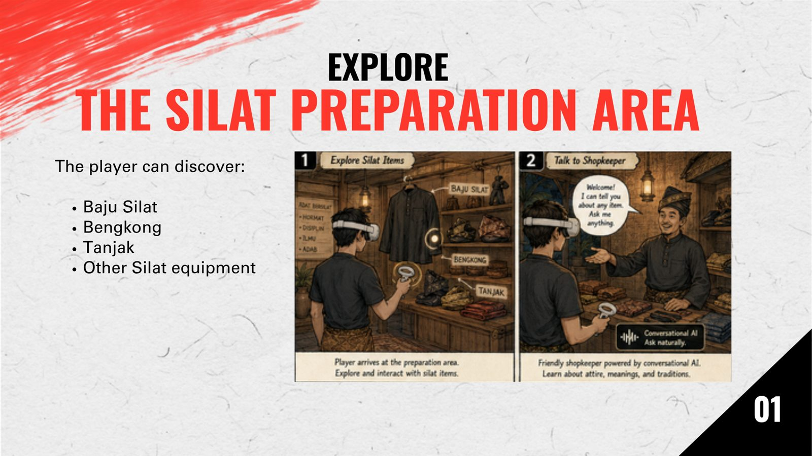

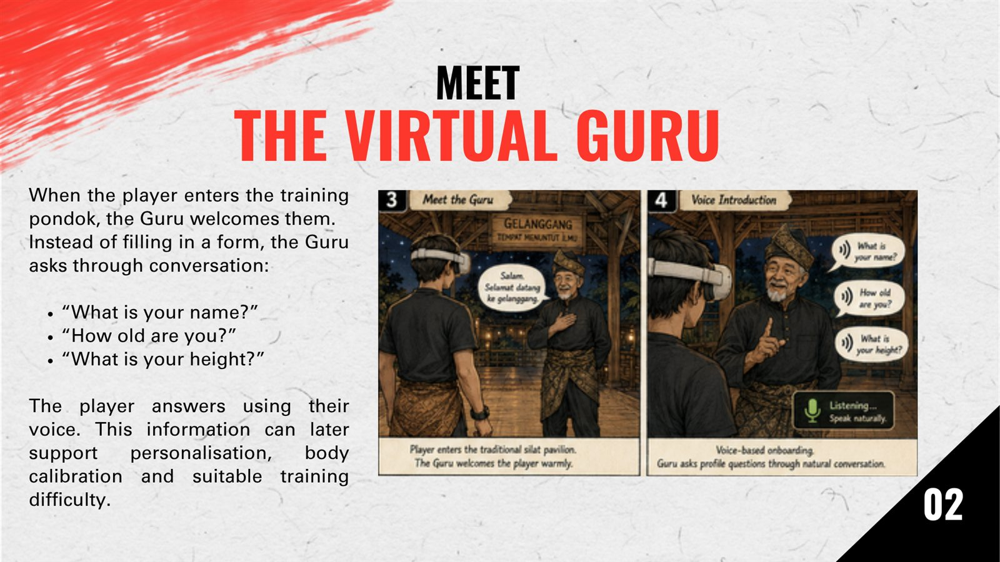

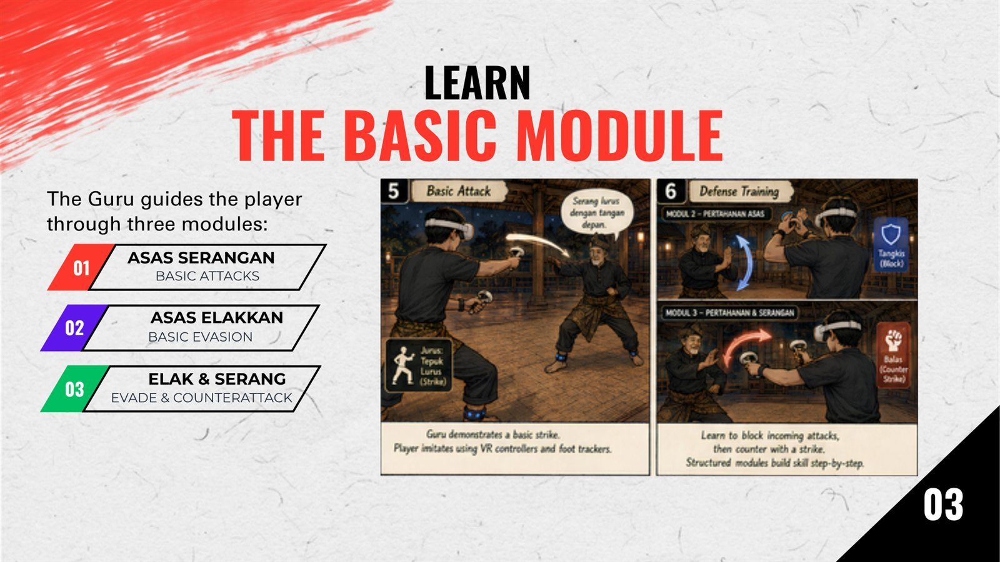

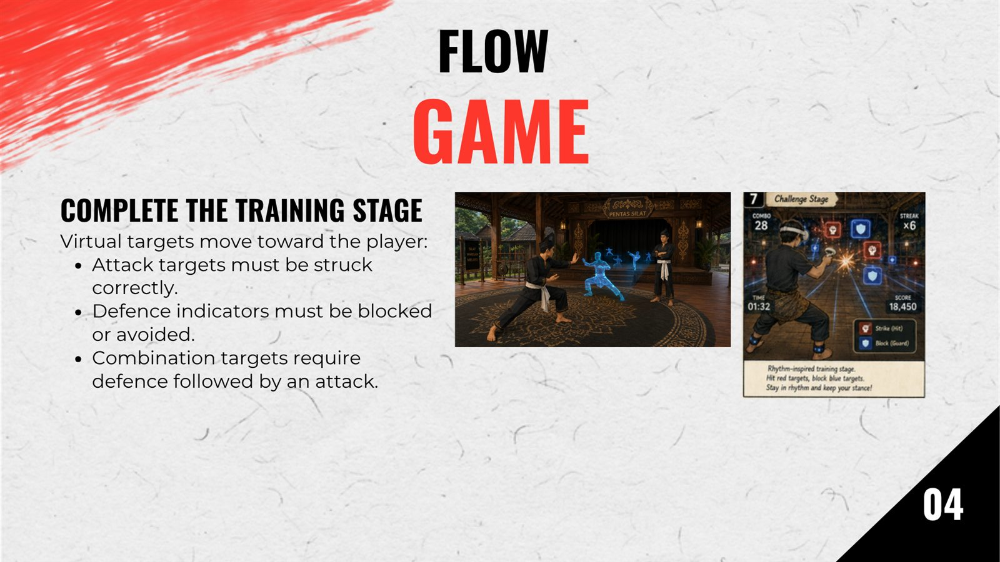
Images above are concepts from the IMMERSA pitch deck. PENCAK is still in development.
Why it matters
PENCAK is designed to introduce the foundations of Silat Seni Gayong in a way that feels active and welcoming. The Virtual Guru gives the experience a human teaching presence, while the setting places each lesson in its cultural context.
The project hopes to spark curiosity about silat and support the preservation of its heritage through a new way to encounter it.
Project artwork
The poster and bunting bring the PENCAK identity together: silat movement, traditional visual motifs, and a virtual reality setting.

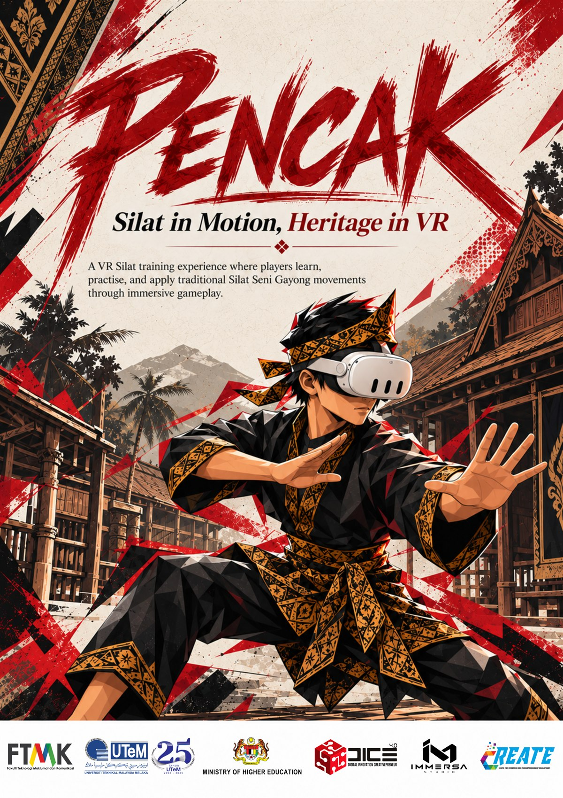

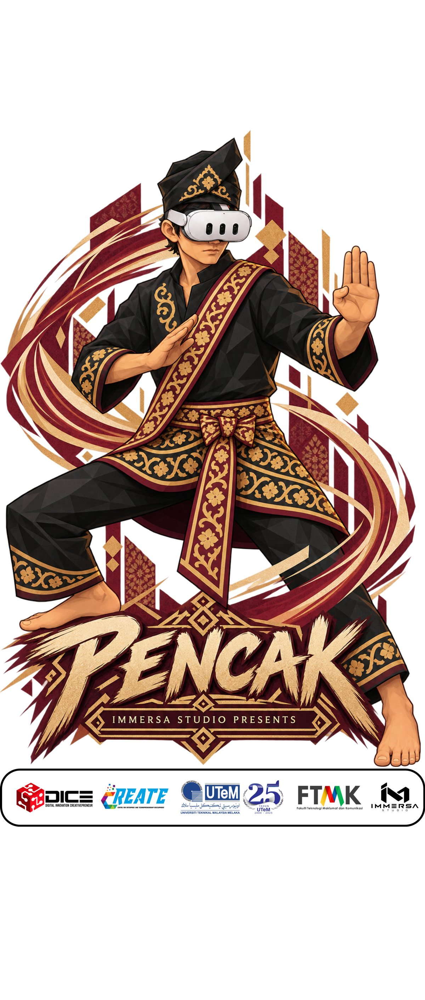